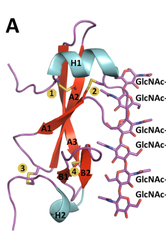

AVR4 (race-specific elicitor A4; Cf-Avr4) is a small, cysteine-rich effector protein secreted by the biotrophic tomato leaf mould fungus Fulvia fulva (Cladosporium fulvum, Passalora fulva). It is made as a 135-residue precursor with a signal peptide and propeptide, and the mature protein carries an invertebrate-type chitin-binding domain (CBM14) stabilised by disulfide bonds. AVR4 is expressed during colonisation of the tomato leaf apoplast, where it binds chitin in the cell walls of the fungus's own hyphae. Binding is specific for chitin (no binding to other cell wall polysaccharides), requires chito-oligomers of at least three GlcNAc units, and occurs with micromolar affinity and roughly 1:1 stoichiometry to chitohexaose; the crystal structure of the AVR4-(GlcNAc)6 complex shows an extended binding surface centred on Trp100 and Asp102. By coating wall chitin, AVR4 shields hyphae from hydrolysis by plant chitinases, a non-enzymatic counter-defensive activity that requires chitin binding and contributes to full virulence (silencing of Avr4 reduces virulence on tomato, and heterologous expression increases susceptibility to other fungi with exposed wall chitin). AVR4 is also an avirulence determinant: tomato plants carrying the receptor-like protein Cf-4 recognise extracellular AVR4 and mount a hypersensitive response. Recognition depends on a stable, protease-resistant fold rather than on the chitin-binding residues, and Cf-4-virulent fungal strains typically carry disulfide-disrupting substitutions that make AVR4 protease-sensitive while preserving chitin binding.
| GO Term | Evidence | Action | Reason |
|---|---|---|---|
|
GO:0005576
extracellular region
|
IEA
GO_REF:0000002 |
ACCEPT |
Summary: AVR4 is a secreted protein (signal peptide plus propeptide) that is found in tomato apoplastic fluid and bound to fungal cell walls during infection. Extracellular region is correct, if general.
Reason: Secretion and extracellular action are well established. More specific locations (host apoplast; the fungal cell wall to which AVR4 binds) are proposed as NEW annotations below, but the general term is not wrong.
Supporting Evidence:
PMID:17849712
The Avr4 protein belongs to a set of effectors that is secreted by C. fulvum during infection
PMID:12736265
The extracellular AVR4 elicitor of the pathogenic fungus Cladosporium fulvum induces defense responses in the tomato genotype Cf-4.
|
|
GO:0008061
chitin binding
|
EXP
PMID:30148881 Structure of the Cladosporium fulvum Avr4 effector in comple... |
ACCEPT |
Summary: Hurlburt et al. solved the 1.95 A crystal structure of AVR4 bound to (GlcNAc)6 and measured binding by ITC, identifying residues (W100, D102, Q69, K84) required for affinity. This is the core molecular function.
Reason: Direct structural and biophysical evidence on the target protein, confirmed by earlier independent studies (specific binding to chitin and chitin oligomers of at least three residues).
Supporting Evidence:
PMID:30148881
Using X-ray crystallography, we solved the crystal structure of CfAvr4 in complex with chitohexaose [(GlcNAc)6] at 1.95Å resolution.
PMID:17153926
We found that interaction of Avr4 with chitin is specific, because it does not interact with other cell wall polysaccharides.
|
|
GO:0008061
chitin binding
|
IEA
GO_REF:0000002 |
ACCEPT |
Summary: InterPro2GO mapping from the CBM14 chitin-binding domain. Correct and experimentally confirmed for this protein.
Reason: The domain-based inference agrees with the experimental evidence (PMID:30148881, PMID:17153926, PMID:12736265).
Supporting Evidence:
PMID:12736265
Sequence homology and the disulfide bond pattern revealed that AVR4 contains an invertebrate (inv) chitin-binding domain (ChBD). Binding of AVR4 to chitin was confirmed experimentally.
|
|
GO:0080185
effector-mediated activation of plant hypersensitive response by symbiont
|
EXP
PMID:10998185 Specific HR-associated recognition of secreted proteins from... |
KEEP AS NON CORE |
Summary: Laugé et al. injected purified secreted C. fulvum proteins, including the race-specific elicitor AVR4, into tomato lines and recorded HR-associated recognition. AVR4 triggers an HR in Cf-4 plants.
Reason: HR induction by AVR4 is real and is the standard GO representation of an avirulence (Avr) protein, but it is a consequence of host recognition by Cf-4 that is genetically and structurally separable from AVR4's intrinsic function (chitin shielding). It is therefore retained as non-core.
Supporting Evidence:
PMID:10998185
We found that HR-associated recognition of one or more of these proteins, in addition to recognition of the race-specific elicitors AVR4 and AVR9 of C. fulvum, occurs among Lycopersicon species.
PMID:30148881
Taken together, these results indicate that mutations in residues within the ChBD that decrease or abolish the protein’s affinity for (GlcNAc)6 do not individually affect recognition by Cf-4 if they do not perturb the stability of the protein.
|
|
GO:0080185
effector-mediated activation of plant hypersensitive response by symbiont
|
EXP
PMID:16167771 The Cf-4 and Cf-9 resistance genes against Cladosporium fulv... |
KEEP AS NON CORE |
Summary: Kruijt et al. used AVR4 elicitor protein to identify AVR4-responsive wild tomato plants and Cf-4 homologues (Hcr9-Avr4s) mediating AVR4 recognition in agroinfiltration assays.
Reason: As for the PMID:10998185 row: AVR4-triggered, Cf-4-dependent HR is well supported, but represents the host recognition outcome, not the effector's intrinsic function.
Supporting Evidence:
PMID:16167771
Plants responsive to the Avr4 and Avr9 elicitor proteins were identified throughout the genus Lycopersicon.
|
|
GO:0140320
PAMP receptor decoy activity
|
EXP
PMID:30148881 Structure of the Cladosporium fulvum Avr4 effector in comple... |
MARK AS OVER ANNOTATED |
Summary: GO:0140320 is defined as binding and sequestering PAMP ligands to prevent them from binding and activating host PAMP receptors (the ECP6/LysM-effector mechanism). The cited paper (full text read) shows chitin binding and protection of fungal hyphae from chitinases, but contains no assay of PAMP sequestration, competition with a host chitin receptor, or suppression of chitin-triggered signalling by AVR4.
Reason: AVR4's demonstrated mechanism is shielding of wall-bound chitin from hydrolytic host chitinases, not sequestration of soluble chitin oligomers away from receptors. The authors themselves propose that AVR4 rests on the surface of chitin microfibrils as a protective layer against endochitinases, and they explicitly note uncertainty about whether binding to free chito-oligosaccharides is biologically relevant. Reduced release of chitin fragments could plausibly follow from wall shielding, but this has not been shown, so the decoy term over-interprets the evidence. The molecular activity is fully captured by chitin binding (GO:0008061).
Supporting Evidence:
PMID:30148881
Since, Avr4 binds (GlcNAc)6 in a 1:1 stoichiometric ratio, it is plausible that the protein rests as a monomer on the solvent-exposed surface of these microfibrils, thus creating a protective layer against endochitinases.
PMID:30148881
If the case, it suggests that Avr4 may interact differently with free in solution chito-oligosaccharides as compared with chitin fixed in microfibrils.
|
|
GO:0140403
effector-mediated suppression of host innate immune response
|
IMP
PMID:30148881 Structure of the Cladosporium fulvum Avr4 effector in comple... |
MODIFY |
Summary: The IMP evidence is the in vitro protection assay: wild-type AVR4 protects Trichoderma viride germlings from plant chitinases plus beta-1,3-glucanases, whereas non-binding mutants (W100A, D102A) fail to protect. This shows that AVR4 counters an antifungal host defence effector (chitinase), not that it suppresses a host immune response.
Reason: AVR4 does not suppress or dampen the host response; chitinases are still produced and active. Instead AVR4 makes the fungus resistant to a host innate immune effector with direct antifungal activity. GO:0141177 (symbiont-mediated evasion of recognition by host innate immune effector; "mitigates the effects of" host effectors such as antimicrobial peptides and complement that have direct activity against the symbiont) describes this precisely. The counter-defensive role is further supported by reduced virulence of Avr4-silenced C. fulvum on tomato (PMID:17849712).
Proposed replacements:
symbiont-mediated evasion of recognition by host innate immune effector
Supporting Evidence:
PMID:30148881
Collectively, results from the protection assays show that mutations in the ChBD of CfAvr4 that decrease or abolish its affinity for (GlcNAc)6 also reduce the protein’s ability to protect fungal germlings against chitinases and thus perform its biological function.
PMID:17153926
In situ fluorescence studies showed that Avr4 also binds to cell walls of C. fulvum during infection of tomato, where it most likely protects the fungus against tomato chitinases
PMID:17849712
Finally, we demonstrate that silencing of the Avr4 gene in C. fulvum decreases its virulence on tomato.
|
|
GO:0140404
effector-mediated perturbation of host innate immune response by symbiont
|
EXP
PMID:23716655 Receptor-like kinase SOBIR1/EVR interacts with receptor-like... |
KEEP AS NON CORE |
Summary: Liebrand et al. (abstract only) used AVR4 as the ligand of Cf-4 to show that SOBIR1/EVR is required for the Cf-4-mediated hypersensitive response and immunity. AVR4 here acts as the trigger of host immunity.
Reason: The parent "perturbation" term covers activation, so it is not wrong; the experiment reflects Cf-4 recognition of AVR4, which is more specifically captured by the existing GO:0080185 rows. Retained as non-core because the avirulence role is a host recognition outcome rather than AVR4's intrinsic function. Full text not inspected; deferring to the curator on the assay.
Supporting Evidence:
PMID:23716655
the mechanism by which these immune receptors mediate downstream signaling upon recognition of their matching ligand, Avr4 and Ave1, remained enigmatic.
|
|
GO:0140404
effector-mediated perturbation of host innate immune response by symbiont
|
EXP
PMID:9437864 Characterization of the tomato Cf-4 gene for resistance to C... |
KEEP AS NON CORE |
Summary: Thomas et al. cloned tomato Cf-4, which confers resistance through recognition of AVR4. The abstract does not describe the AVR4 assays, but cloning of Cf-4 would have required AVR4-dependent responses in transgenic plants; the curator read the full text.
Reason: Consistent with the well-established AVR4/Cf-4 gene-for-gene relationship; the annotation reflects host recognition (avirulence) rather than AVR4's intrinsic function and is redundant with the more specific GO:0080185. Full text not available here, so the curator's assay call is accepted.
Supporting Evidence:
PMID:9437864
In tomato, the Cf-4 and Cf-9 resistance genes map to the same location but confer resistance to Cladosporium fulvum through recognition of different avirulence determinants (AVR4 and AVR9)
|
|
GO:0140404
effector-mediated perturbation of host innate immune response by symbiont
|
TAS
PMID:25902074 Novel Mutations Detected in Avirulence Genes Overcoming Toma... |
KEEP AS NON CORE |
Summary: Iida et al. surveyed Japanese C. fulvum isolates and found Avr4 mutations (mostly cysteine substitutions and a frameshift) that allow strains to overcome Cf-4 resistance, and tested HR-inducing activity of wild-type and mutant Avr4 alleles by PVX expression.
Reason: The paper supports the avirulence/recognition role of AVR4 (HR in Cf-4 plants, lost in variant alleles). As with the other GO:0140404 rows this is a host recognition outcome and is redundant with GO:0080185; retained as non-core.
Supporting Evidence:
PMID:25902074
their encoded proteins trigger a hypersensitive response (HR) in host plants carrying the corresponding Cf-2, Cf-4, Cf-4E, Cf-5, and Cf-9 genes
|
|
GO:0140593
host apoplast
|
IDA
PMID:12736265 Natural disulfide bond-disrupted mutants of AVR4 of the toma... |
NEW |
Summary: AVR4 is secreted into the tomato leaf apoplast during infection, where it is detected in apoplastic fluid; virulent isoforms are absent from apoplastic fluid because they are protease-sensitive.
Reason: A more specific, symbiont-side location than extracellular region, directly supported by detection of AVR4 isoforms (or their absence) in tomato apoplastic fluid and by apoplastic expression studies. This is a location term, so the participation test does not apply.
Supporting Evidence:
PMID:12736265
resulting in the absence of the corresponding AVR4 isoforms in apoplastic fluid
PMID:9090881
Polyclonal antibodies raised against the AVR4 elicitor, however, did not detect AVR4 isoforms in MM-Cf4 plants infected by the different virulent strains, indicating that these isoforms are unstable.
|
|
GO:0009277
fungal-type cell wall
|
IDA
PMID:17153926 Cladosporium fulvum Avr4 protects fungal cell walls against ... |
NEW |
Summary: In situ fluorescence showed that AVR4 binds to the cell walls of C. fulvum hyphae during tomato infection; this is where it exerts its protective function.
Reason: Direct in situ localisation of the protein on the fungus's own cell wall during infection; captures the operative site of the core function.
Supporting Evidence:
PMID:17153926
In situ fluorescence studies showed that Avr4 also binds to cell walls of C. fulvum during infection of tomato
|
Q: Does AVR4 bound to hyphal walls reduce the release of chitin oligomers that would otherwise be perceived by tomato chitin receptors (e.g. CEBiP/LYK homologues), i.e. does wall shielding also contribute to evasion of chitin recognition (GO:0141141) in addition to protection from chitinases?
Q: GO:0080185 (effector-mediated activation of plant hypersensitive response) is currently an is_a descendant of GO:0140403 (effector-mediated suppression of host innate immune response). Is this placement intended, given that activation of HR is the opposite outcome to suppression?
Experiment: Test whether purified AVR4 (wild type versus non-binding W100A/D102A) affects chitin-oligomer-induced ROS burst or medium alkalinisation in tomato cell cultures, both with soluble (GlcNAc)6/8 and with intact hyphal walls challenged by tomato chitinases, to separate sequestration from wall shielding.
Experiment: Generate a clean Avr4 deletion in C. fulvum (rather than silencing) and complement with chitin-binding-deficient alleles to quantify the contribution of chitin binding to virulence on Cf-0 tomato.
The research report should be a detailed narrative explaining the function, biological processes, and localization of the gene product. Citations should be given for all claims.
You should prioritize authoritative reviews and primary scientific literature when conducting research. You can supplement
this with annotations you find in gene/protein databases, but these can be outdated or inaccurate.
We are specifically interested in the primary function of the gene - for enzymes, what reaction is catalyzed, and what is the substrate specificity? For transporters, what is the substrate? For structural proteins or adapters, what is the broader structural role? For signaling molecules, what is the role in the pathway.
We are interested in where in or outside the cell the gene product carries out its function.
We are also interested in the signaling or biochemical pathways in which the gene functions. We are less interested in broad pleiotropic effects, except where these elucidate the precise role.
Include evidence where possible. We are interested in both experimental evidence as well as inference from structure, evolution, or bioinformatic analysis. Precise studies should be prioritized over high-throughput, where available.
Identity check. The supplied accession Q00363 denotes the AVR4 precursor from the tomato-leaf-mold fungus Fulvia fulva, also described in the relevant literature as Cladosporium fulvum or Passalora fulva. The published protein name Cf-Avr4 and its secreted, cysteine-rich CBM14 chitin-binding domain agree with the supplied description and InterPro/Pfam annotations. This is not Avr4E or Avr9 from the same fungus, nor Pf-Avr4, an ortholog from Pseudocercospora fuligena. The accession-to-sequence mapping is taken from the supplied UniProt identification; the cited experimental studies establish the matching organism, name and molecular function. (kohler2016structuralanalysisof pages 1-4, kohler2016structuralanalysisof pages 4-7, hurlburt2018structureofthe pages 1-2, westerink2003theroleof pages 57-60)
Primary molecular function: Cf-Avr4 is a nonenzymatic, chitin-binding fungal effector. It coats accessible chitin in fungal cell walls, limiting hydrolysis by plant chitinases during infection. Its second, conditional biological role is as an avirulence determinant: tomato plants carrying the cell-surface immune receptor Cf-4 perceive extracellular Avr4 and initiate defense. Chitin binding is the effector’s demonstrated intrinsic biochemical activity; Cf-4 signaling is a host response to that effector, not an enzymatic or signaling reaction catalyzed by fungal Avr4. (burg2003studiestowardsthe pages 100-104, hurlburt2018structureofthe pages 7-9, huang2024receptorlikecytoplasmickinases pages 1-2, mesarich2018specifichypersensitiveresponse–associated pages 3-5)
The following evidence map distinguishes measurements on this target from work on an ortholog or a heterologous plant host. (hurlburt2018structureofthe pages 7-9, huang2024receptorlikecytoplasmickinases pages 1-2, kohler2016structuralanalysisof pages 10-13)
| Aspect | Specific direct result | Interpretation / qualification | Supporting source |
|---|---|---|---|
| Identity and domain | The target is Cf-Avr4 from Fulvia fulva (syn. Cladosporium fulvum / Passalora fulva), a secreted 135-residue precursor containing a cysteine-rich CBM14 chitin-binding domain. | Matches the user-provided Q00363 annotation. It is distinct from Avr4E, Avr9, and Avr4 orthologs in other fungi. | Hurlburt et al., 27 Aug 2018, DOI (hurlburt2018structureofthe pages 1-2, hurlburt2018structureofthe pages 3-5) |
| Chitin specificity | Binding becomes detectable at (GlcNAc)3; GlcNAc and (GlcNAc)2 produced no NMR effect. Cf-Avr4 bound crystalline chitin but not cellulose, xylan, curdlan, or fully deacetylated chitosan in the reported assays. | The substrate is chitin or chito-oligosaccharide, not a protein or an enzymatic substrate. Polymer and oligomer assays provide complementary specificity evidence. | van den Burg, 2003, DOI (burg2003studiestowardsthe pages 100-104, burg2003studiestowardsthe pages 97-100); Kohler et al., Jul 2016, DOI (kohler2016structuralanalysisof pages 4-7) |
| Quantitative ligand binding | ITC gave wild-type Cf-Avr4 Kd = 6.73 ± 1.49 μM, ΔH = −38.37 ± 2.96 kJ/mol, and stoichiometry n = 1.09 ± 0.12 with (GlcNAc)6. W100A and D102A abolished detectable binding; Q69N and K84A weakened binding to 130.95 ± 31.47 μM and 120.67 ± 18.77 μM, respectively. | Supports approximately 1:1 protein:chitohexaose binding and identifies residues important for affinity. | Hurlburt et al., 27 Aug 2018, DOI (hurlburt2018structureofthe pages 7-9) |
| Ligand-bound structure | The Cf-Avr4–(GlcNAc)6 crystal structure was solved at 1.95 Å resolution (PDB 6BN0). It contains a distorted β-sandwich, two short α-helices, four disulfide bonds, and an extended ligand-binding surface. | This was the first reported CBM14–ligand co-crystal structure. The carbohydrate-mediated dimer observed in the crystal may not be the sole physiological wall-bound assembly. | Hurlburt et al., 27 Aug 2018, DOI (hurlburt2018structureofthe pages 1-2, hurlburt2018structureofthe pages 12-13, hurlburt2018structureofthe pages 3-5) |
| Primary biochemical function | Wild-type Cf-Avr4 protected Trichoderma viride hyphae from chitinases plus β-1,3-glucanases. Nonbinding W100A and D102A failed to protect; reduced-affinity Q69N and K84A permitted growth but caused greater hyphal injury. | Cf-Avr4 is a nonenzymatic chitin-binding lectin/effector that masks fungal-wall chitin. It neither catalyzes chitin hydrolysis nor directly inhibits the chitinase enzyme. | Hurlburt et al., 27 Aug 2018, DOI (hurlburt2018structureofthe pages 7-9); van den Burg, 2003, DOI (burg2003studiestowardsthe pages 100-104) |
| Biological location | AVR4 is induced following fungal entry through tomato stomata, secreted into the leaf apoplast, and accumulated on fungal walls where chitin is exposed. | Its operative site is extracellular—the host–pathogen interface and fungal cell wall during infection—not the fungal cytosol. | Westerink, 2003, DOI (westerink2003theroleof pages 110-113); Mesarich et al., Jan 2018, DOI (mesarich2018specifichypersensitiveresponse–associated pages 3-5) |
| Cf-4 immune recognition | Chitin-binding-defective K84A and W100A retained strong Cf-4-dependent hypersensitive-response activity. Reduced responses of destabilized variants correlated with extracellular proteolysis, and all tested variants were recognized when sufficient apoplastic protein accumulated. | Cf-4 recognition is separable from chitin binding and appears to depend mainly on a correctly folded, protease-stable Avr4 structure rather than a single ligand-contact residue. | Hurlburt et al., 27 Aug 2018, DOI (hurlburt2018structureofthe pages 10-12, hurlburt2018structureofthe pages 9-10) |
| 2024 signaling development | In Cf-4-expressing Nicotiana benthamiana, Avr4 perception involved constitutive Cf-4–SOBIR1 association, BAK1 recruitment, reciprocal SOBIR1/BAK1 phosphorylation, and differential RLCK-VII-6/7/8 control of the biphasic ROS burst; RLCK-VII-7 was important for hypersensitive cell death. | This advances understanding of the plant receptor pathway, not Avr4's intrinsic fungal biochemical function. Most functional dissection used a heterologous N. benthamiana system rather than infected tomato. | Huang et al., May 2024, DOI (huang2024receptorlikecytoplasmickinases pages 1-2, huang2024receptorlikecytoplasmickinases pages 6-7) |
| Ortholog evidence boundary | Deleting Pf-Avr4 reduced biomass and disease severity in Pseudocercospora fuligena. | This supports conservation of Avr4-family virulence function but is not a knockout of the target F. fulva AVR4/Q00363 and must not be reported as one. | Kohler et al., Jul 2016, DOI (kohler2016structuralanalysisof pages 10-13, kohler2016structuralanalysisof pages 7-10) |
Table: Evidence map for the identity, localization, ligand specificity, structure, protective function, and host recognition of Fulvia fulva Cf-Avr4. It separates direct evidence about the target protein from heterologous plant-signaling and fungal-ortholog results.
Chitin is a polymer of β-1,4-linked N-acetylglucosamine (GlcNAc). Cf-Avr4 binds crystalline chitin and chitin-derived oligomers; tested alternatives, including cellulose, xylan, curdlan and fully deacetylated chitosan, did not show comparable binding under the reported assay conditions. Earlier NMR experiments detected an interaction beginning with the trisaccharide (GlcNAc)₃, but not with GlcNAc or (GlcNAc)₂ at the concentrations tested. This describes binding specificity, not catalytic substrate turnover: no reaction or enzymatic product is assigned to Avr4. (kohler2016structuralanalysisof pages 1-4, kohler2016structuralanalysisof pages 4-7, burg2003studiestowardsthe pages 100-104, burg2003studiestowardsthe pages 97-100)
Direct isothermal-titration calorimetry measured Cf-Avr4 binding to chitohexaose, (GlcNAc)₆, with Kᵈ = 6.73 ± 1.49 μM, binding enthalpy −38.37 ± 2.96 kJ/mol and approximately one protein per oligomer (n = 1.09 ± 0.12). The target-protein–ligand crystal structure, PDB 6BN0, was determined at 1.95 Å resolution. It shows a disulfide-stabilized CBM14 fold and an extended sugar-binding surface spanning much of the protein. Although carbohydrate-mediated Avr4 dimers occur in the crystal, their arrangement on natural fungal-wall chitin remains uncertain. The published Figure 1 depicts the bound oligomer and four disulfide bonds. (hurlburt2018structureofthe pages 1-2, hurlburt2018structureofthe pages 12-13, hurlburt2018structureofthe pages 3-5, hurlburt2018structureofthe pages 7-9, hurlburt2018structureofthe media 82726cb6)
Structure-guided substitutions connect binding to protective function. W100A and D102A eliminated detectable (GlcNAc)₆ binding; Q69N and K84A weakened binding to 130.95 ± 31.47 μM and 120.67 ± 18.77 μM, respectively. In assays with Trichoderma viride germlings challenged with chitinases and β-1,3-glucanases, wild-type Cf-Avr4 protected hyphae, W100A and D102A largely failed to protect them, and the reduced-affinity variants left more evidence of hyphal injury. Earlier chitin-azure experiments indicated that Avr4 protects the chitin substrate rather than directly inhibiting the chitinase enzyme. These are mechanistically informative assays on fungal material, not measurements of field-level tomato protection. (burg2003studiestowardsthe pages 100-104, hurlburt2018structureofthe pages 7-9)
Avr4 is produced as a secreted precursor and acts outside the fungal cell, in the infected tomato leaf apoplast and on exposed chitin of fungal hyphal walls. Earlier infection studies reported induction soon after fungal entry through stomata and accumulation on hyphae at sites where wall chitin is accessible. A relevant qualification is that C. fulvum grown in vitro can have inaccessible wall chitin and little Avr4 expression; this does not reproduce its apoplastic infection-stage environment. The supported biological-process annotation is therefore protection of the fungal cell wall during host colonization, rather than cytosolic fungal signaling or chitin synthesis. (burg2003studiestowardsthe pages 97-100, westerink2003theroleof pages 110-113, mesarich2018specifichypersensitiveresponse–associated pages 3-5)
The contribution to virulence has more than one level of evidence. Direct biochemical experiments establish wall protection; a later primary study reports that earlier silencing of Cf-Avr4 reduced C. fulvum virulence, although the original silencing measurements were not available for independent assessment here. Separately, two Pf-Avr4 deletion mutants* showed reduced fungal biomass and disease severity on tomato, supporting conservation of function—but those deletions were in P. fuligena and must *not be attributed to the Q00363 gene. (hurlburt2018structureofthe pages 7-9, kohler2016structuralanalysisof pages 10-13, kohler2016structuralanalysisof pages 7-10)
In tomato carrying Cf-4, secreted Avr4 serves as a recognized extracellular effector and can provoke a hypersensitive defense response that restricts this pathogen. Recognition and wall protection are experimentally separable: the binding-impaired K84A and W100A variants still induced strong Cf-4-dependent responses. Some other variants showed weaker responses when infiltrated at lower concentrations but were more susceptible to extracellular proteolysis; when enough protein accumulated in the leaf apoplast, the tested variants remained recognizable. Thus, loss of a sugar-contact residue alone does not imply escape from Cf-4. Naturally occurring destabilized Avr4 variants can nevertheless evade effective Cf-4-mediated resistance while retaining chitin-binding activity. (hurlburt2018structureofthe pages 10-12, westerink2003theroleof pages 110-113, hurlburt2018structureofthe pages 9-10, westerink2003theroleof pages 13-16)
The most directly relevant recent primary study, Huang and colleagues’ May 2024 Nature Communications paper, refined the plant-side pathway. Cf-4 associates with SOBIR1 and uses BAK1 for Avr4-triggered signaling; SOBIR1 and BAK1 reciprocally phosphorylate one another. Genetic tests found distinct contributions of RLCK-VII-6, -7 and -8 to the Avr4/Cf-4-induced, biphasic reactive-oxygen-species response, with RLCK-VII-7 especially important for hypersensitive cell death. Crucially, most of that mechanistic dissection used Cf-4-expressing Nicotiana benthamiana, not naturally infected tomato, and did not reveal a new intrinsic biochemical activity of fungal Avr4. Earlier 2023 results on this signaling system were released as a preprint; the 2024 peer-reviewed study is the preferred source. (huang2024receptorlikecytoplasmickinases pages 1-2, huang2024receptorlikecytoplasmickinases pages 4-5, huang2024receptorlikecytoplasmickinases pages 6-7, joosten2023receptorlikecytoplasmickinases pages 10-13)
The Avr4–Cf-4 pair is a practical example of effector-informed tomato resistance breeding and screening: Cf-4 originated from wild Solanum habrochaites and was introgressed into cultivated tomato; purified Avr4 or effector-expression systems can reveal plants that recognize the effector. In a broader C. fulvum effectoromics investigation, researchers identified 70 infection-associated apoplastic small secreted proteins, tested 41 for recognition in wild tomato, and found nine recognized by at least one accession. Those figures concern the broader effector screen, not nine activities of Avr4. Pathogen variants capable of overcoming Cf-based resistance make reliance on any single recognition specificity vulnerable to breakdown. (mesarich2018specifichypersensitiveresponse–associated pages 5-7, mesarich2018specifichypersensitiveresponse–associated pages 26-28, mesarich2018specifichypersensitiveresponse–associated pages 7-9)
Assessment: The strongest direct annotation for Q00363 is secreted CBM14 chitin-binding effector; extracellular fungal-wall chitin shielding against host chitinases; recognized by tomato Cf-4. The 2018 quantitative structure–function study remains more informative about what the fungal protein does than the 2023–2024 studies, which mainly advance understanding of how plants respond to it. Crystal-state dimerization, laboratory hyphal-protection assays and virulence phenotypes of an ortholog should not be presented as separately demonstrated mechanisms or knockout phenotypes for Q00363 during natural infection. (hurlburt2018structureofthe pages 7-9, hurlburt2018structureofthe pages 12-13, huang2024receptorlikecytoplasmickinases pages 1-2, kohler2016structuralanalysisof pages 10-13)
References
(kohler2016structuralanalysisof pages 1-4): Amanda C. Kohler, Li-Hung Chen, Nicholas Hurlburt, Anthony Salvucci, Benjamin Schwessinger, Andrew J. Fisher, and Ioannis Stergiopoulos. Structural analysis of an avr4 effector ortholog offers insight into chitin binding and recognition by the cf-4 receptor. Plant Cell, 28:1945-1965, Jul 2016. URL: https://doi.org/10.1105/tpc.15.00893, doi:10.1105/tpc.15.00893. This article has 44 citations and is from a highest quality peer-reviewed journal.
(kohler2016structuralanalysisof pages 4-7): Amanda C. Kohler, Li-Hung Chen, Nicholas Hurlburt, Anthony Salvucci, Benjamin Schwessinger, Andrew J. Fisher, and Ioannis Stergiopoulos. Structural analysis of an avr4 effector ortholog offers insight into chitin binding and recognition by the cf-4 receptor. Plant Cell, 28:1945-1965, Jul 2016. URL: https://doi.org/10.1105/tpc.15.00893, doi:10.1105/tpc.15.00893. This article has 44 citations and is from a highest quality peer-reviewed journal.
(hurlburt2018structureofthe pages 1-2): Nicholas K. Hurlburt, Li-Hung Chen, Ioannis Stergiopoulos, and Andrew J. Fisher. Structure of the cladosporium fulvum avr4 effector in complex with (glcnac)6 reveals the ligand-binding mechanism and uncouples its intrinsic function from recognition by the cf-4 resistance protein. PLOS Pathogens, 14:e1007263, Aug 2018. URL: https://doi.org/10.1371/journal.ppat.1007263, doi:10.1371/journal.ppat.1007263. This article has 54 citations and is from a highest quality peer-reviewed journal.
(westerink2003theroleof pages 57-60): N. Westerink. The role of avr4 and avr4e proteins in virulence and avirulence of the tomato pathogen cladosporium fulvum: molecular aspects of disease susceptibility and resistance. Unknown journal, 2003. URL: https://doi.org/10.18174/121383, doi:10.18174/121383. This article has 5 citations.
(burg2003studiestowardsthe pages 100-104): H.A. van den Burg. Studies towards the intrinsic function of the avr4 and avr9 elicitors of the fungal tomato pathogen cladosporium fulvum. ArXiv, 2003. URL: https://doi.org/10.18174/121419, doi:10.18174/121419. This article has 1 citations.
(hurlburt2018structureofthe pages 7-9): Nicholas K. Hurlburt, Li-Hung Chen, Ioannis Stergiopoulos, and Andrew J. Fisher. Structure of the cladosporium fulvum avr4 effector in complex with (glcnac)6 reveals the ligand-binding mechanism and uncouples its intrinsic function from recognition by the cf-4 resistance protein. PLOS Pathogens, 14:e1007263, Aug 2018. URL: https://doi.org/10.1371/journal.ppat.1007263, doi:10.1371/journal.ppat.1007263. This article has 54 citations and is from a highest quality peer-reviewed journal.
(huang2024receptorlikecytoplasmickinases pages 1-2): Wen R. H. Huang, Ciska Braam, Carola Kretschmer, Sergio Landeo Villanueva, Huan Liu, Filiz Ferik, Aranka M. Burgh, Jinbin Wu, Lisha Zhang, Thorsten Nürnberger, Yuluan Wang, Michael F. Seidl, Edouard Evangelisti, Johannes Stuttmann, and Matthieu H. A. J. Joosten. Receptor-like cytoplasmic kinases of different subfamilies differentially regulate sobir1/bak1-mediated immune responses in nicotiana benthamiana. Nature Communications, May 2024. URL: https://doi.org/10.1038/s41467-024-48313-1, doi:10.1038/s41467-024-48313-1. This article has 28 citations and is from a highest quality peer-reviewed journal.
(mesarich2018specifichypersensitiveresponse–associated pages 3-5): Carl H. Mesarich, Bilal Ӧkmen, Hanna Rovenich, Scott A. Griffiths, Changchun Wang, Mansoor Karimi Jashni, Aleksandar Mihajlovski, Jérôme Collemare, Lukas Hunziker, Cecilia H. Deng, Ate van der Burgt, Henriek G. Beenen, Matthew D. Templeton, Rosie E. Bradshaw, and Pierre J. G. M. de Wit. Specific hypersensitive response–associated recognition of new apoplastic effectors from cladosporium fulvum in wild tomato. Molecular Plant-Microbe Interactions®, 31:145-162, Jan 2018. URL: https://doi.org/10.1094/mpmi-05-17-0114-fi, doi:10.1094/mpmi-05-17-0114-fi. This article has 80 citations.
(kohler2016structuralanalysisof pages 10-13): Amanda C. Kohler, Li-Hung Chen, Nicholas Hurlburt, Anthony Salvucci, Benjamin Schwessinger, Andrew J. Fisher, and Ioannis Stergiopoulos. Structural analysis of an avr4 effector ortholog offers insight into chitin binding and recognition by the cf-4 receptor. Plant Cell, 28:1945-1965, Jul 2016. URL: https://doi.org/10.1105/tpc.15.00893, doi:10.1105/tpc.15.00893. This article has 44 citations and is from a highest quality peer-reviewed journal.
(hurlburt2018structureofthe pages 3-5): Nicholas K. Hurlburt, Li-Hung Chen, Ioannis Stergiopoulos, and Andrew J. Fisher. Structure of the cladosporium fulvum avr4 effector in complex with (glcnac)6 reveals the ligand-binding mechanism and uncouples its intrinsic function from recognition by the cf-4 resistance protein. PLOS Pathogens, 14:e1007263, Aug 2018. URL: https://doi.org/10.1371/journal.ppat.1007263, doi:10.1371/journal.ppat.1007263. This article has 54 citations and is from a highest quality peer-reviewed journal.
(burg2003studiestowardsthe pages 97-100): H.A. van den Burg. Studies towards the intrinsic function of the avr4 and avr9 elicitors of the fungal tomato pathogen cladosporium fulvum. ArXiv, 2003. URL: https://doi.org/10.18174/121419, doi:10.18174/121419. This article has 1 citations.
(hurlburt2018structureofthe pages 12-13): Nicholas K. Hurlburt, Li-Hung Chen, Ioannis Stergiopoulos, and Andrew J. Fisher. Structure of the cladosporium fulvum avr4 effector in complex with (glcnac)6 reveals the ligand-binding mechanism and uncouples its intrinsic function from recognition by the cf-4 resistance protein. PLOS Pathogens, 14:e1007263, Aug 2018. URL: https://doi.org/10.1371/journal.ppat.1007263, doi:10.1371/journal.ppat.1007263. This article has 54 citations and is from a highest quality peer-reviewed journal.
(westerink2003theroleof pages 110-113): N. Westerink. The role of avr4 and avr4e proteins in virulence and avirulence of the tomato pathogen cladosporium fulvum: molecular aspects of disease susceptibility and resistance. Unknown journal, 2003. URL: https://doi.org/10.18174/121383, doi:10.18174/121383. This article has 5 citations.
(hurlburt2018structureofthe pages 10-12): Nicholas K. Hurlburt, Li-Hung Chen, Ioannis Stergiopoulos, and Andrew J. Fisher. Structure of the cladosporium fulvum avr4 effector in complex with (glcnac)6 reveals the ligand-binding mechanism and uncouples its intrinsic function from recognition by the cf-4 resistance protein. PLOS Pathogens, 14:e1007263, Aug 2018. URL: https://doi.org/10.1371/journal.ppat.1007263, doi:10.1371/journal.ppat.1007263. This article has 54 citations and is from a highest quality peer-reviewed journal.
(hurlburt2018structureofthe pages 9-10): Nicholas K. Hurlburt, Li-Hung Chen, Ioannis Stergiopoulos, and Andrew J. Fisher. Structure of the cladosporium fulvum avr4 effector in complex with (glcnac)6 reveals the ligand-binding mechanism and uncouples its intrinsic function from recognition by the cf-4 resistance protein. PLOS Pathogens, 14:e1007263, Aug 2018. URL: https://doi.org/10.1371/journal.ppat.1007263, doi:10.1371/journal.ppat.1007263. This article has 54 citations and is from a highest quality peer-reviewed journal.
(huang2024receptorlikecytoplasmickinases pages 6-7): Wen R. H. Huang, Ciska Braam, Carola Kretschmer, Sergio Landeo Villanueva, Huan Liu, Filiz Ferik, Aranka M. Burgh, Jinbin Wu, Lisha Zhang, Thorsten Nürnberger, Yuluan Wang, Michael F. Seidl, Edouard Evangelisti, Johannes Stuttmann, and Matthieu H. A. J. Joosten. Receptor-like cytoplasmic kinases of different subfamilies differentially regulate sobir1/bak1-mediated immune responses in nicotiana benthamiana. Nature Communications, May 2024. URL: https://doi.org/10.1038/s41467-024-48313-1, doi:10.1038/s41467-024-48313-1. This article has 28 citations and is from a highest quality peer-reviewed journal.
(kohler2016structuralanalysisof pages 7-10): Amanda C. Kohler, Li-Hung Chen, Nicholas Hurlburt, Anthony Salvucci, Benjamin Schwessinger, Andrew J. Fisher, and Ioannis Stergiopoulos. Structural analysis of an avr4 effector ortholog offers insight into chitin binding and recognition by the cf-4 receptor. Plant Cell, 28:1945-1965, Jul 2016. URL: https://doi.org/10.1105/tpc.15.00893, doi:10.1105/tpc.15.00893. This article has 44 citations and is from a highest quality peer-reviewed journal.
(hurlburt2018structureofthe media 82726cb6): Nicholas K. Hurlburt, Li-Hung Chen, Ioannis Stergiopoulos, and Andrew J. Fisher. Structure of the cladosporium fulvum avr4 effector in complex with (glcnac)6 reveals the ligand-binding mechanism and uncouples its intrinsic function from recognition by the cf-4 resistance protein. PLOS Pathogens, 14:e1007263, Aug 2018. URL: https://doi.org/10.1371/journal.ppat.1007263, doi:10.1371/journal.ppat.1007263. This article has 54 citations and is from a highest quality peer-reviewed journal.
(westerink2003theroleof pages 13-16): N. Westerink. The role of avr4 and avr4e proteins in virulence and avirulence of the tomato pathogen cladosporium fulvum: molecular aspects of disease susceptibility and resistance. Unknown journal, 2003. URL: https://doi.org/10.18174/121383, doi:10.18174/121383. This article has 5 citations.
(huang2024receptorlikecytoplasmickinases pages 4-5): Wen R. H. Huang, Ciska Braam, Carola Kretschmer, Sergio Landeo Villanueva, Huan Liu, Filiz Ferik, Aranka M. Burgh, Jinbin Wu, Lisha Zhang, Thorsten Nürnberger, Yuluan Wang, Michael F. Seidl, Edouard Evangelisti, Johannes Stuttmann, and Matthieu H. A. J. Joosten. Receptor-like cytoplasmic kinases of different subfamilies differentially regulate sobir1/bak1-mediated immune responses in nicotiana benthamiana. Nature Communications, May 2024. URL: https://doi.org/10.1038/s41467-024-48313-1, doi:10.1038/s41467-024-48313-1. This article has 28 citations and is from a highest quality peer-reviewed journal.
(joosten2023receptorlikecytoplasmickinases pages 10-13): Matthieu Joosten, Wen Huang, Ciska Braam, Carola Kretschmer, Huan Liu, Filiz Ferik, Aranka van der Burgh, Sergio Villanueva, Jinbin Wu, Lisha Zhang, Thorsten Nuernberger, Yulu Wang, Michael F Seidl, Edouard Evangelisti, and Johannes Stuttmann. Receptor-like cytoplasmic kinases belonging to different subfamilies differentially regulate sobir1/bak1-mediated immune responses in nicotiana benthamiana. Unknown journal, Nov 2023. URL: https://doi.org/10.21203/rs.3.rs-3569835/v1, doi:10.21203/rs.3.rs-3569835/v1.
(mesarich2018specifichypersensitiveresponse–associated pages 5-7): Carl H. Mesarich, Bilal Ӧkmen, Hanna Rovenich, Scott A. Griffiths, Changchun Wang, Mansoor Karimi Jashni, Aleksandar Mihajlovski, Jérôme Collemare, Lukas Hunziker, Cecilia H. Deng, Ate van der Burgt, Henriek G. Beenen, Matthew D. Templeton, Rosie E. Bradshaw, and Pierre J. G. M. de Wit. Specific hypersensitive response–associated recognition of new apoplastic effectors from cladosporium fulvum in wild tomato. Molecular Plant-Microbe Interactions®, 31:145-162, Jan 2018. URL: https://doi.org/10.1094/mpmi-05-17-0114-fi, doi:10.1094/mpmi-05-17-0114-fi. This article has 80 citations.
(mesarich2018specifichypersensitiveresponse–associated pages 26-28): Carl H. Mesarich, Bilal Ӧkmen, Hanna Rovenich, Scott A. Griffiths, Changchun Wang, Mansoor Karimi Jashni, Aleksandar Mihajlovski, Jérôme Collemare, Lukas Hunziker, Cecilia H. Deng, Ate van der Burgt, Henriek G. Beenen, Matthew D. Templeton, Rosie E. Bradshaw, and Pierre J. G. M. de Wit. Specific hypersensitive response–associated recognition of new apoplastic effectors from cladosporium fulvum in wild tomato. Molecular Plant-Microbe Interactions®, 31:145-162, Jan 2018. URL: https://doi.org/10.1094/mpmi-05-17-0114-fi, doi:10.1094/mpmi-05-17-0114-fi. This article has 80 citations.
(mesarich2018specifichypersensitiveresponse–associated pages 7-9): Carl H. Mesarich, Bilal Ӧkmen, Hanna Rovenich, Scott A. Griffiths, Changchun Wang, Mansoor Karimi Jashni, Aleksandar Mihajlovski, Jérôme Collemare, Lukas Hunziker, Cecilia H. Deng, Ate van der Burgt, Henriek G. Beenen, Matthew D. Templeton, Rosie E. Bradshaw, and Pierre J. G. M. de Wit. Specific hypersensitive response–associated recognition of new apoplastic effectors from cladosporium fulvum in wild tomato. Molecular Plant-Microbe Interactions®, 31:145-162, Jan 2018. URL: https://doi.org/10.1094/mpmi-05-17-0114-fi, doi:10.1094/mpmi-05-17-0114-fi. This article has 80 citations.

Sources: UniProt record, GOA (10 rows), falcon deep research, cached publications
(PMID:30148881 full text; others abstract only), plus six PubMed-verified papers added
and cached via just fetch-gene-pmids (17849712, 17153926, 14769793, 12736265,
27401545, 9090881).
id: Q00363
gene_symbol: AVR4
product_type: PROTEIN
status: COMPLETE
taxon:
id: NCBITaxon:5499
label: Fulvia fulva
description: >-
AVR4 (race-specific elicitor A4; Cf-Avr4) is a small, cysteine-rich effector
protein secreted by the biotrophic tomato leaf mould fungus Fulvia fulva
(Cladosporium fulvum, Passalora fulva). It is made as a 135-residue precursor
with a signal peptide and propeptide, and the mature protein carries an
invertebrate-type chitin-binding domain (CBM14) stabilised by disulfide bonds.
AVR4 is expressed during colonisation of the tomato leaf apoplast, where it
binds chitin in the cell walls of the fungus's own hyphae. Binding is specific
for chitin (no binding to other cell wall polysaccharides), requires chito-oligomers
of at least three GlcNAc units, and occurs with micromolar affinity
and roughly 1:1 stoichiometry to chitohexaose; the crystal structure of the
AVR4-(GlcNAc)6 complex shows an extended binding surface centred on Trp100 and
Asp102. By coating wall chitin, AVR4 shields hyphae from hydrolysis by plant
chitinases, a non-enzymatic counter-defensive activity that requires chitin
binding and contributes to full virulence (silencing of Avr4 reduces virulence
on tomato, and heterologous expression increases susceptibility to other
fungi with exposed wall chitin). AVR4 is also an avirulence determinant:
tomato plants carrying the receptor-like protein Cf-4 recognise extracellular
AVR4 and mount a hypersensitive response. Recognition depends on a stable,
protease-resistant fold rather than on the chitin-binding residues, and Cf-4-virulent
fungal strains typically carry disulfide-disrupting substitutions
that make AVR4 protease-sensitive while preserving chitin binding.
existing_annotations:
- term:
id: GO:0005576
label: extracellular region
evidence_type: IEA
original_reference_id: GO_REF:0000002
qualifier: located_in
supporting_entities:
- InterPro:IPR002557
review:
summary: >-
AVR4 is a secreted protein (signal peptide plus propeptide) that is found
in tomato apoplastic fluid and bound to fungal cell walls during infection.
Extracellular region is correct, if general.
action: ACCEPT
reason: >-
Secretion and extracellular action are well established. More specific
locations (host apoplast; the fungal cell wall to which AVR4 binds) are
proposed as NEW annotations below, but the general term is not wrong.
supported_by:
- reference_id: PMID:17849712
supporting_text: The Avr4 protein belongs to a set of effectors that is secreted
by C. fulvum during infection
- reference_id: PMID:12736265
supporting_text: The extracellular AVR4 elicitor of the pathogenic fungus Cladosporium
fulvum induces defense responses in the tomato genotype Cf-4.
- term:
id: GO:0008061
label: chitin binding
evidence_type: EXP
original_reference_id: PMID:30148881
qualifier: enables
review:
summary: >-
Hurlburt et al. solved the 1.95 A crystal structure of AVR4 bound to
(GlcNAc)6 and measured binding by ITC, identifying residues (W100, D102,
Q69, K84) required for affinity. This is the core molecular function.
action: ACCEPT
reason: >-
Direct structural and biophysical evidence on the target protein, confirmed
by earlier independent studies (specific binding to chitin and chitin
oligomers of at least three residues).
supported_by:
- reference_id: PMID:30148881
supporting_text: Using X-ray crystallography, we solved the crystal structure
of CfAvr4 in complex with chitohexaose [(GlcNAc)6] at 1.95Å resolution.
- reference_id: PMID:17153926
supporting_text: We found that interaction of Avr4 with chitin is specific, because
it does not interact with other cell wall polysaccharides.
- term:
id: GO:0008061
label: chitin binding
evidence_type: IEA
original_reference_id: GO_REF:0000002
qualifier: enables
supporting_entities:
- InterPro:IPR002557
- InterPro:IPR036508
review:
summary: >-
InterPro2GO mapping from the CBM14 chitin-binding domain. Correct and
experimentally confirmed for this protein.
action: ACCEPT
reason: >-
The domain-based inference agrees with the experimental evidence
(PMID:30148881, PMID:17153926, PMID:12736265).
supported_by:
- reference_id: PMID:12736265
supporting_text: Sequence homology and the disulfide bond pattern revealed that
AVR4 contains an invertebrate (inv) chitin-binding domain (ChBD). Binding
of AVR4 to chitin was confirmed experimentally.
- term:
id: GO:0080185
label: effector-mediated activation of plant hypersensitive response by symbiont
evidence_type: EXP
original_reference_id: PMID:10998185
qualifier: involved_in
review:
summary: >-
Laugé et al. injected purified secreted C. fulvum proteins, including the
race-specific elicitor AVR4, into tomato lines and recorded HR-associated
recognition. AVR4 triggers an HR in Cf-4 plants.
action: KEEP_AS_NON_CORE
reason: >-
HR induction by AVR4 is real and is the standard GO representation of an
avirulence (Avr) protein, but it is a consequence of host recognition by
Cf-4 that is genetically and structurally separable from AVR4's intrinsic
function (chitin shielding). It is therefore retained as non-core.
supported_by:
- reference_id: PMID:10998185
supporting_text: We found that HR-associated recognition of one or more of these
proteins, in addition to recognition of the race-specific elicitors AVR4
and AVR9 of C. fulvum, occurs among Lycopersicon species.
- reference_id: PMID:30148881
supporting_text: Taken together, these results indicate that mutations in residues
within the ChBD that decrease or abolish the protein’s affinity for (GlcNAc)6
do not individually affect recognition by Cf-4 if they do not perturb the
stability of the protein.
- term:
id: GO:0080185
label: effector-mediated activation of plant hypersensitive response by symbiont
evidence_type: EXP
original_reference_id: PMID:16167771
qualifier: involved_in
review:
summary: >-
Kruijt et al. used AVR4 elicitor protein to identify AVR4-responsive wild
tomato plants and Cf-4 homologues (Hcr9-Avr4s) mediating AVR4 recognition
in agroinfiltration assays.
action: KEEP_AS_NON_CORE
reason: >-
As for the PMID:10998185 row: AVR4-triggered, Cf-4-dependent HR is well
supported, but represents the host recognition outcome, not the
effector's intrinsic function.
supported_by:
- reference_id: PMID:16167771
supporting_text: Plants responsive to the Avr4 and Avr9 elicitor proteins were
identified throughout the genus Lycopersicon.
- term:
id: GO:0140320
label: PAMP receptor decoy activity
evidence_type: EXP
original_reference_id: PMID:30148881
qualifier: enables
review:
summary: >-
GO:0140320 is defined as binding and sequestering PAMP ligands to prevent
them from binding and activating host PAMP receptors (the ECP6/LysM-effector
mechanism). The cited paper (full text read) shows chitin binding
and protection of fungal hyphae from chitinases, but contains no assay of
PAMP sequestration, competition with a host chitin receptor, or
suppression of chitin-triggered signalling by AVR4.
action: MARK_AS_OVER_ANNOTATED
reason: >-
AVR4's demonstrated mechanism is shielding of wall-bound chitin from
hydrolytic host chitinases, not sequestration of soluble chitin oligomers
away from receptors. The authors themselves propose that AVR4 rests on the
surface of chitin microfibrils as a protective layer against
endochitinases, and they explicitly note uncertainty about whether binding
to free chito-oligosaccharides is biologically relevant. Reduced release
of chitin fragments could plausibly follow from wall shielding, but this
has not been shown, so the decoy term over-interprets the evidence. The
molecular activity is fully captured by chitin binding (GO:0008061).
supported_by:
- reference_id: PMID:30148881
supporting_text: Since, Avr4 binds (GlcNAc)6 in a 1:1 stoichiometric ratio,
it is plausible that the protein rests as a monomer on the solvent-exposed
surface of these microfibrils, thus creating a protective layer against
endochitinases.
- reference_id: PMID:30148881
supporting_text: If the case, it suggests that Avr4 may interact differently
with free in solution chito-oligosaccharides as compared with chitin fixed
in microfibrils.
- term:
id: GO:0140403
label: effector-mediated suppression of host innate immune response
evidence_type: IMP
original_reference_id: PMID:30148881
qualifier: involved_in
review:
summary: >-
The IMP evidence is the in vitro protection assay: wild-type AVR4 protects
Trichoderma viride germlings from plant chitinases plus beta-1,3-glucanases,
whereas non-binding mutants (W100A, D102A) fail to protect. This shows that
AVR4 counters an antifungal host defence effector (chitinase), not that it
suppresses a host immune response.
action: MODIFY
reason: >-
AVR4 does not suppress or dampen the host response; chitinases are still
produced and active. Instead AVR4 makes the fungus resistant to a host
innate immune effector with direct antifungal activity. GO:0141177
(symbiont-mediated evasion of recognition by host innate immune effector;
"mitigates the effects of" host effectors such as antimicrobial peptides and
complement that have direct activity against the symbiont) describes this
precisely. The counter-defensive role is further supported by reduced
virulence of Avr4-silenced C. fulvum on tomato (PMID:17849712).
proposed_replacement_terms:
- id: GO:0141177
label: symbiont-mediated evasion of recognition by host innate immune effector
supported_by:
- reference_id: PMID:30148881
supporting_text: Collectively, results from the protection assays show that
mutations in the ChBD of CfAvr4 that decrease or abolish its affinity for
(GlcNAc)6 also reduce the protein’s ability to protect fungal germlings
against chitinases and thus perform its biological function.
- reference_id: PMID:17153926
supporting_text: In situ fluorescence studies showed that Avr4 also binds to
cell walls of C. fulvum during infection of tomato, where it most likely protects
the fungus against tomato chitinases
- reference_id: PMID:17849712
supporting_text: Finally, we demonstrate that silencing of the Avr4 gene in C.
fulvum decreases its virulence on tomato.
- term:
id: GO:0140404
label: effector-mediated perturbation of host innate immune response by symbiont
evidence_type: EXP
original_reference_id: PMID:23716655
qualifier: involved_in
review:
summary: >-
Liebrand et al. (abstract only) used AVR4 as the ligand of Cf-4 to show
that SOBIR1/EVR is required for the Cf-4-mediated hypersensitive response
and immunity. AVR4 here acts as the trigger of host immunity.
action: KEEP_AS_NON_CORE
reason: >-
The parent "perturbation" term covers activation, so it is not wrong; the
experiment reflects Cf-4 recognition of AVR4, which is more specifically
captured by the existing GO:0080185 rows. Retained as non-core because the
avirulence role is a host recognition outcome rather than AVR4's intrinsic
function. Full text not inspected; deferring to the curator on the assay.
supported_by:
- reference_id: PMID:23716655
supporting_text: the mechanism by which these immune receptors mediate downstream
signaling upon recognition of their matching ligand, Avr4 and Ave1, remained
enigmatic.
- term:
id: GO:0140404
label: effector-mediated perturbation of host innate immune response by symbiont
evidence_type: EXP
original_reference_id: PMID:9437864
qualifier: involved_in
review:
summary: >-
Thomas et al. cloned tomato Cf-4, which confers resistance through
recognition of AVR4. The abstract does not describe the AVR4 assays, but
cloning of Cf-4 would have required AVR4-dependent responses in transgenic
plants; the curator read the full text.
action: KEEP_AS_NON_CORE
reason: >-
Consistent with the well-established AVR4/Cf-4 gene-for-gene relationship;
the annotation reflects host recognition (avirulence) rather than AVR4's
intrinsic function and is redundant with the more specific GO:0080185.
Full text not available here, so the curator's assay call is accepted.
supported_by:
- reference_id: PMID:9437864
supporting_text: In tomato, the Cf-4 and Cf-9 resistance genes map to the same
location but confer resistance to Cladosporium fulvum through recognition
of different avirulence determinants (AVR4 and AVR9)
- term:
id: GO:0140404
label: effector-mediated perturbation of host innate immune response by symbiont
evidence_type: TAS
original_reference_id: PMID:25902074
qualifier: involved_in
review:
summary: >-
Iida et al. surveyed Japanese C. fulvum isolates and found Avr4 mutations
(mostly cysteine substitutions and a frameshift) that allow strains to
overcome Cf-4 resistance, and tested HR-inducing activity of wild-type and
mutant Avr4 alleles by PVX expression.
action: KEEP_AS_NON_CORE
reason: >-
The paper supports the avirulence/recognition role of AVR4 (HR in Cf-4
plants, lost in variant alleles). As with the other GO:0140404 rows this
is a host recognition outcome and is redundant with GO:0080185; retained
as non-core.
supported_by:
- reference_id: PMID:25902074
supporting_text: their encoded proteins trigger a hypersensitive response (HR)
in host plants carrying the corresponding Cf-2, Cf-4, Cf-4E, Cf-5, and Cf-9
genes
- term:
id: GO:0140593
label: host apoplast
evidence_type: IDA
original_reference_id: PMID:12736265
qualifier: located_in
review:
summary: >-
AVR4 is secreted into the tomato leaf apoplast during infection, where it
is detected in apoplastic fluid; virulent isoforms are absent from
apoplastic fluid because they are protease-sensitive.
action: NEW
reason: >-
A more specific, symbiont-side location than extracellular region,
directly supported by detection of AVR4 isoforms (or their absence) in
tomato apoplastic fluid and by apoplastic expression studies. This is a
location term, so the participation test does not apply.
supported_by:
- reference_id: PMID:12736265
supporting_text: resulting in the absence of the corresponding AVR4 isoforms
in apoplastic fluid
- reference_id: PMID:9090881
supporting_text: Polyclonal antibodies raised against the AVR4 elicitor, however,
did not detect AVR4 isoforms in MM-Cf4 plants infected by the different virulent
strains, indicating that these isoforms are unstable.
- term:
id: GO:0009277
label: fungal-type cell wall
evidence_type: IDA
original_reference_id: PMID:17153926
qualifier: located_in
review:
summary: >-
In situ fluorescence showed that AVR4 binds to the cell walls of C.
fulvum hyphae during tomato infection; this is where it exerts its
protective function.
action: NEW
reason: >-
Direct in situ localisation of the protein on the fungus's own cell wall
during infection; captures the operative site of the core function.
supported_by:
- reference_id: PMID:17153926
supporting_text: In situ fluorescence studies showed that Avr4 also binds to
cell walls of C. fulvum during infection of tomato
core_functions:
- description: >-
Secreted non-enzymatic chitin-binding lectin (CBM14) that coats chitin in
the cell walls of the fungus's own hyphae during apoplastic colonisation of
tomato, shielding the wall from hydrolysis by plant chitinases and thereby
allowing the fungus to withstand this host antifungal defence.
molecular_function:
id: GO:0008061
label: chitin binding
directly_involved_in:
- id: GO:0141177
label: symbiont-mediated evasion of recognition by host innate immune effector
locations:
- id: GO:0009277
label: fungal-type cell wall
- id: GO:0140593
label: host apoplast
supported_by:
- reference_id: PMID:30148881
supporting_text: Collectively, results from the protection assays show that mutations
in the ChBD of CfAvr4 that decrease or abolish its affinity for (GlcNAc)6 also
reduce the protein’s ability to protect fungal germlings against chitinases
and thus perform its biological function.
- reference_id: PMID:17153926
supporting_text: In vitro, Avr4 protects chitin against hydrolysis by plant chitinases.
- reference_id: PMID:14769793
supporting_text: By this mechanism AVR4 is likely to effectively shield chitin
on the fungal cell wall, preventing the cell wall from being degraded by plant
chitinases.
- reference_id: PMID:17849712
supporting_text: This is the first report on the intrinsic function of a fungal
avirulence protein that has a counter-defensive activity required for full virulence
of the pathogen.
- reference_id: file:FULFL/AVR4/AVR4-deep-research-falcon.md
supporting_text: It coats accessible chitin in fungal cell walls, limiting hydrolysis
by plant chitinases during infection.
references:
- id: GO_REF:0000002
title: Gene Ontology annotation through association of InterPro records with GO
terms
findings: []
- id: PMID:10998185
title: Specific HR-associated recognition of secreted proteins from Cladosporium
fulvum occurs in both host and non-host plants.
findings: []
- id: PMID:16167771
title: The Cf-4 and Cf-9 resistance genes against Cladosporium fulvum are conserved
in wild tomato species.
findings: []
- id: PMID:23716655
title: Receptor-like kinase SOBIR1/EVR interacts with receptor-like proteins in
plant immunity against fungal infection.
findings: []
- id: PMID:25902074
title: Novel Mutations Detected in Avirulence Genes Overcoming Tomato Cf Resistance
Genes in Isolates of a Japanese Population of Cladosporium fulvum.
findings: []
- id: PMID:30148881
title: Structure of the Cladosporium fulvum Avr4 effector in complex with (GlcNAc)6
reveals the ligand-binding mechanism and uncouples its intrinsic function from
recognition by the Cf-4 resistance protein.
findings:
- statement: Crystal structure of AVR4 with (GlcNAc)6; W100A and D102A abolish
binding and fail to protect hyphae from chitinases; chitin-binding mutants
that remain protease-stable are still recognised by Cf-4.
reference_review:
relevance: HIGH
correctness: VERIFIED
review_notes: Full text cached and read. Supports chitin binding and chitinase
protection; does not test PAMP sequestration (decoy activity).
- id: PMID:9437864
title: Characterization of the tomato Cf-4 gene for resistance to Cladosporium fulvum
identifies sequences that determine recognitional specificity in Cf-4 and Cf-9.
findings: []
- id: PMID:17849712
title: The chitin-binding Cladosporium fulvum effector protein Avr4 is a virulence
factor.
findings:
- statement: Silencing of Avr4 in C. fulvum reduces virulence on tomato; heterologous
Avr4 expression increases virulence of fungi with exposed wall chitin.
reference_review:
relevance: HIGH
correctness: VERIFIED
review_notes: PubMed-verified (DOI 10.1094/MPMI-20-9-1092); abstract only cached.
- id: PMID:17153926
title: Cladosporium fulvum Avr4 protects fungal cell walls against hydrolysis by
plant chitinases accumulating during infection.
findings:
- statement: Avr4 binds chitin specifically, protects fungi against plant chitinases,
and binds C. fulvum cell walls in situ during infection.
reference_review:
relevance: HIGH
correctness: VERIFIED
review_notes: PubMed-verified (DOI 10.1094/MPMI-19-1420); abstract only cached.
- id: PMID:14769793
title: 'Binding of the AVR4 elicitor of Cladosporium fulvum to chitotriose units
is facilitated by positive allosteric protein-protein interactions: the chitin-binding
site of AVR4 represents a novel binding site on the folding scaffold shared between
the invertebrate and the plant chitin-binding domain.'
findings: []
reference_review:
relevance: MEDIUM
correctness: VERIFIED
review_notes: PubMed-verified (DOI 10.1074/jbc.M312594200); thermodynamics of
chito-oligomer binding and cooperative binding model.
- id: PMID:12736265
title: Natural disulfide bond-disrupted mutants of AVR4 of the tomato pathogen Cladosporium
fulvum are sensitive to proteolysis, circumvent Cf-4-mediated resistance, but
retain their chitin binding ability.
findings: []
reference_review:
relevance: HIGH
correctness: VERIFIED
review_notes: PubMed-verified (DOI 10.1074/jbc.M212196200).
- id: PMID:27401545
title: Structural Analysis of an Avr4 Effector Ortholog Offers Insight into Chitin
Binding and Recognition by the Cf-4 Receptor.
findings: []
reference_review:
relevance: MEDIUM
correctness: VERIFIED
review_notes: PubMed-verified (DOI 10.1105/tpc.15.00893). Structure is of the
P. fuligena ortholog Pf-Avr4; Cf-Avr4 included in comparative binding and
chitinase-protection assays.
- id: PMID:9090881
title: The biotrophic fungus Cladosporium fulvum circumvents Cf-4-mediated resistance
by producing unstable AVR4 elicitors.
findings: []
reference_review:
relevance: MEDIUM
correctness: VERIFIED
review_notes: PubMed-verified (DOI 10.1105/tpc.9.3.367).
- id: file:FULFL/AVR4/AVR4-deep-research-falcon.md
title: Deep research report on AVR4 (Falcon)
findings: []
suggested_questions:
- question: >-
Does AVR4 bound to hyphal walls reduce the release of chitin oligomers that
would otherwise be perceived by tomato chitin receptors (e.g. CEBiP/LYK
homologues), i.e. does wall shielding also contribute to evasion of chitin
recognition (GO:0141141) in addition to protection from chitinases?
- question: >-
GO:0080185 (effector-mediated activation of plant hypersensitive response)
is currently an is_a descendant of GO:0140403 (effector-mediated suppression
of host innate immune response). Is this placement intended, given that
activation of HR is the opposite outcome to suppression?
suggested_experiments:
- description: >-
Test whether purified AVR4 (wild type versus non-binding W100A/D102A) affects
chitin-oligomer-induced ROS burst or medium alkalinisation in tomato cell
cultures, both with soluble (GlcNAc)6/8 and with intact hyphal walls
challenged by tomato chitinases, to separate sequestration from wall
shielding.
- description: >-
Generate a clean Avr4 deletion in C. fulvum (rather than silencing) and
complement with chitin-binding-deficient alleles to quantify the
contribution of chitin binding to virulence on Cf-0 tomato.